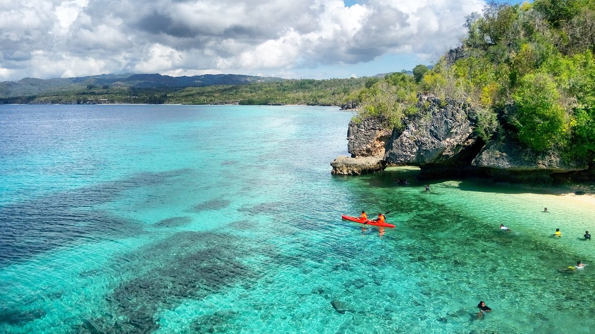

Siquijor is a small yet captivating island province in the Central Visayas region (Region VII) of the Philippines. It is the third smallest province in the country in both land area and population. Covering approximately 337.5 km², Siquijor is known for its breathtaking beaches, mystical traditions, and serene island lifestyle. Despite its small size, it holds a rich history, vibrant culture, and a unique identity that sets it apart from other Philippine islands. Historical Background: Siquijor was first sighted by the Spaniards in 1565 when Miguel López de Legazpi’s expedition passed by the island. The Spanish called it "Isla del Fuego" (Island of Fire) due to the mysterious glow they saw at night, which was later discovered to be caused by fireflies inhabiting the island’s molave trees. In 1783, Siquijor was officially established as a parish under Spanish rule and was originally part of Negros Oriental before becoming a separate province in 1971. During the American period (1898-1946), Siquijor continued to develop, with the construction of schools, roads, and other infrastructure. World War II brought hardship to the island, as it was occupied by Japanese forces, but local guerrilla fighters resisted their rule. After the war, Siquijor slowly rebuilt itself and became known as a peaceful island rich in culture and natural beauty. Geography and Administration: Siquijor is surrounded by the Bohol Sea and is located southeast of Negros, southwest of Cebu and Bohol, and north of Mindanao. The province consists of six municipalities: Siquijor (the capital), Larena, Lazi, San Juan, Maria, and Enrique Villanueva. These municipalities are further divided into 134 barangays. The island is known for its rolling hills, limestone formations, and coastal plains, with Mount Bandilaan as its highest peak at 628 meters above sea level. Population, Language, and Culture: According to the 2020 Census, Siquijor has a population of about 103,395 people. The majority of locals speak Cebuano, but English and Tagalog are also widely understood, especially in tourism and education. Siquijor has a deeply rooted folk healing tradition, with many locals practicing ancient healing rituals, herbal medicine, and spiritualism. Despite modern influences, these traditions continue to thrive, attracting both local and foreign visitors who seek mystical experiences. The province is also home to numerous historical landmarks, including century-old churches, such as St. Francis of Assisi Church in Siquijor town and San Isidro Labrador Church and Convent in Lazi, which is recognized as a National Cultural Treasure. These structures reflect the Spanish colonial influence that shaped the island’s religious and architectural heritage. Tourism and Natural Attractions: Siquijor is a rising eco-tourism destination, known for its white-sand beaches, clear turquoise waters, waterfalls, caves, and stunning sunset views. Popular tourist attractions include: -Salagdoong Beach – A famous beach for cliff diving and crystal-clear waters. -Cambugahay Falls – A three-tiered waterfall perfect for swimming and rope swinging. -Old Enchanted Balete Tree – A giant 400-year-old tree with a natural spring beneath it, believed to have mystical properties. -Paliton Beach – A serene, white-sand beach known for its picturesque sunset views. -Cantabon Cave – An underground cave filled with stalactites and stalagmites. Aside from its natural beauty, Siquijor is also known for its faith healers, who gather during Holy Week to perform traditional healing rituals using herbs, chants, and prayers. The Siquijor Healing Festival attracts curious visitors and believers who seek alternative healing methods. Economy and Transportation: Siquijor’s economy is primarily driven by agriculture, fishing, and tourism. The island produces coconut, corn, and root crops, while coastal communities rely on fishing. In recent years, tourism has become a major contributor to the local economy, with an increasing number of resorts, restaurants, and eco-tourism activities. The province is accessible mainly by ferry from Dumaguete, Cebu, Bohol, and Iligan City. The Larena and Siquijor seaports serve as the main entry points, while the Siquijor Airport allows small aircraft to land. Transportation within the island includes tricycles, motorcycles, and rental scooters, which are the preferred mode of exploring the island.

2020 All Rights Reserved. Design by Free html Templates Distributed by ThemeWagon